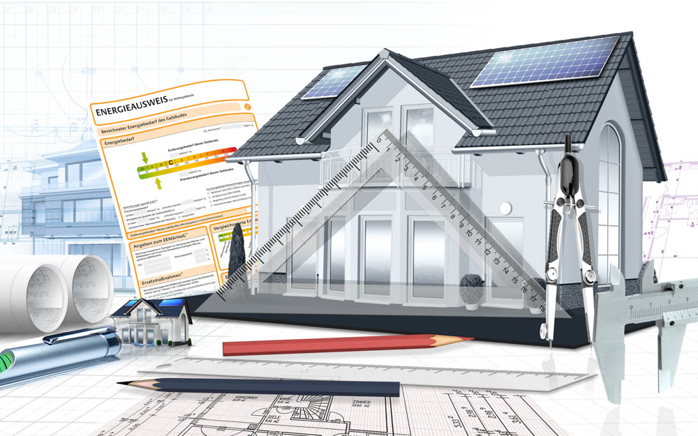

Hauskaufberatung
Haus kaufen mit Sicherheit und Gewissheit
Sie möchten ein Haus in Bocholt, Rhede, Isselburg, Borken oder einer anderen Stadt im Kreis Borken kaufen? Dann lohnt sich eine professionelle Hauskaufberatung durch einen erfahrenen Energieberater. Viele Bestandsimmobilien weisen energetische Schwachstellen auf, die bei einer Besichtigung oft nicht sofort erkennbar sind. Hohe Heizkosten, unzureichende Dämmung oder eine veraltete Heizungsanlage können nach dem Kauf erhebliche Investitionen erforderlich machen. Mit einer unabhängigen Hauskaufberatung erhalten Sie eine realistische Einschätzung des energetischen Zustands der Immobilie sowie der zu erwartenden Sanierungskosten. So schaffen Sie eine fundierte Grundlage für Ihre Kaufentscheidung.

Warum eine Hauskaufberatung sinnvoll ist
Gerade ältere Wohngebäude im Raum Bocholt, Rhede und dem Kreis Borken wurden häufig nur teilweise modernisiert. Oft wurden beispielsweise Fenster erneuert, während Dach, Außenwände oder Heizungsanlage weiterhin energetischen Sanierungsbedarf aufweisen.
Eine energetische Hauskaufberatung hilft Ihnen dabei,
- versteckte Sanierungskosten frühzeitig zu erkennen,
- den energetischen Zustand der Immobilie objektiv bewerten zu lassen,
- zukünftige Energiekosten besser einzuschätzen,
- sinnvolle Modernisierungsmaßnahmen zu planen,
- staatliche Fördermöglichkeiten frühzeitig zu berücksichtigen,
- kostspielige Fehlentscheidungen beim Immobilienkauf zu vermeiden.
Was wird bei der Hauskaufberatung geprüft?
Im Rahmen der Hauskaufberatung verschaffe ich mir einen umfassenden Überblick über den energetischen Zustand der Immobilie. Dabei werden unter anderem folgende Bereiche betrachtet:
- Gebäudehülle (Dach, Fassade, Fenster und Kellerdecke)
- Zustand und Effizienz der Heizungsanlage
- Qualität der Wärmedämmung
- Mögliche energetische Schwachstellen und Wärmebrücken
- Potenziale zur Senkung der Energiekosten
- Sinnvolle Sanierungsmaßnahmen und deren Reihenfolge
- Voraussichtliche Sanierungskosten
- Mögliche Förderprogramme von BAFA und KfW
Sie erhalten eine verständliche Einschätzung, welche Maßnahmen kurz-, mittel- oder langfristig sinnvoll sind und mit welchen Investitionen Sie rechnen sollten. So können Sie den energetischen Zustand der Immobilie bereits vor dem Kauf besser bewerten und fundiert entscheiden.